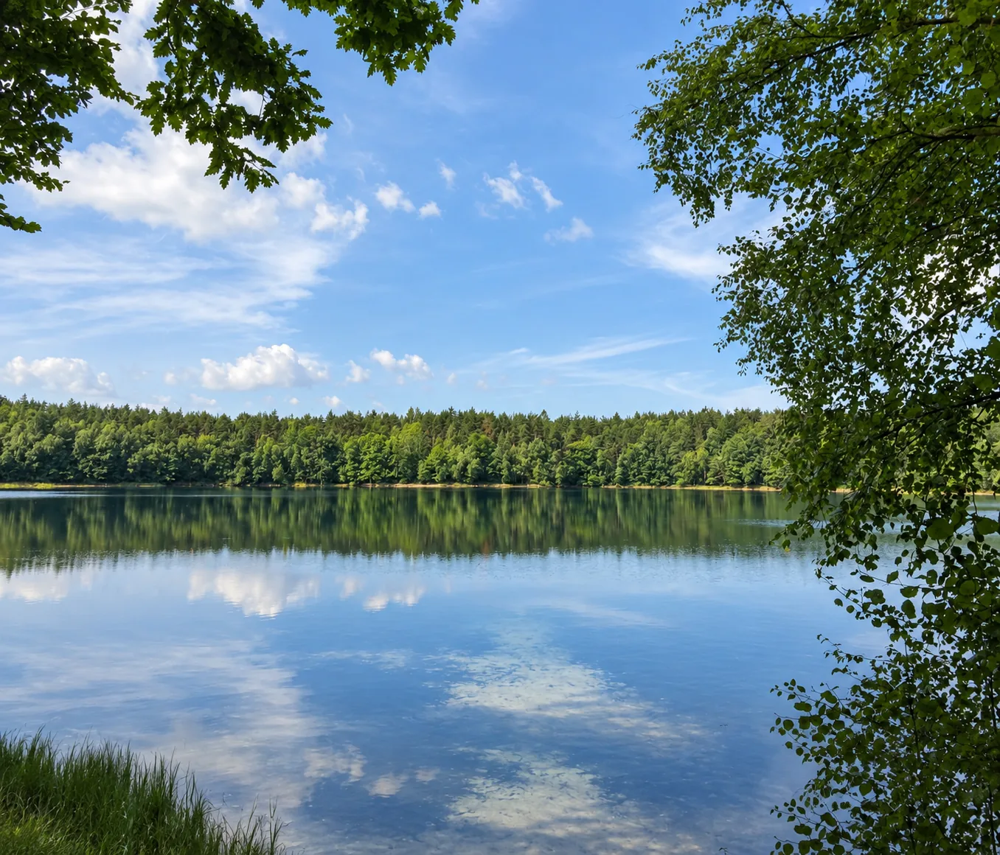

Na tej stronie
Jak czytać tę stronę
Najpierw blisko Siemian.
Potem dalej w region.
W Parku Krajobrazowym Pojezierza Iławskiego znajdują się rezerwaty Jasne, Czerwica i Jezioro Gaudy. Jezioro Karaś i Jezioro Iłgi leżą dalej, ale dobrze uzupełniają obraz chronionej przyrody Pojezierza Iławskiego.
Najbliżej
Jasne, Czerwica, Gaudy
Trzy rezerwaty opisane przez Zespół Parków Krajobrazowych Pojezierza Iławskiego i Wzgórz Dylewskich.
Dalszy wypad
Karaś i Iłgi
Dwa rezerwaty na gruntach związanych z Nadleśnictwem Iława - bardzo różne, ale oba ważne przede wszystkim dla mokradeł i ptaków.
Rezerwat Jasne
Dwa jeziora, torfowisko i las.
Rezerwat utworzono w 1988 r. Obejmuje Jezioro Jasne, Jezioro Luba, torfowisko i otaczające drzewostany - łącznie 105,79 ha. Jasne jest skrajnie oligotroficzne, bardzo kwaśne i wyjątkowo przejrzyste; światło dociera według ZPK do 14-15 m.
To dobry przykład miejsca, w którym ochrona jest ważniejsza niż rekreacja. Na terenie rezerwatu zabronione są między innymi kąpiel, sporty wodne i przebywanie poza miejscami wyznaczonymi. Dookoła Jasnego wyznaczono trasę spacerową.

Rezerwat Czerwica
Kormorany odeszły.
Rezerwat został.
Czerwica była rezerwatem ornitologicznym chroniącym kolonię kormorana czarnego. Ptaki opuściły kolonię, a od 2018 r. jest to rezerwat krajobrazowy chroniący procesy regeneracyjne zachodzące w dawnej kolonii.
Rezerwat obejmuje dwie wyspy oraz półwysep na północno-zachodnim brzegu jeziora Czerwica. ZPK wskazuje dojście od parkingu przy drodze Jerzwałd - Iława i dalej leśną ścieżką.
Rezerwat Jezioro Gaudy
Płytkie jezioro.
Ogromne znaczenie dla ptaków.
Rezerwat utworzono w 1957 r. Obejmuje Jezioro Gaudy i przylegające od wschodu bagna. ZPK podaje powierzchnię rezerwatu 520,56 ha; samo jezioro ma około 152 ha i maksymalnie około 2 m głębokości.
Rozległe bagna sprawiają, że rezerwat jest trudno dostępny. ZPK wskazuje możliwość zobaczenia tafli jeziora od strony Rudnik i Kamieńca. Teren jest ważnym miejscem lęgowym i odpoczynkowym ptaków wodno-błotnych.
Rezerwat Jezioro Karaś
Jezioro, które
powoli staje się lądem.
Rezerwat faunistyczny utworzono w 1958 r. Nadleśnictwo Iława podaje powierzchnię 814,65 ha. Chroniony jest zarastający zbiornik wraz z bagnami, ważny dla ptactwa wodnego i błotnego oraz jako przykład naturalnego procesu lądowacenia jeziora.
Jezioro Karaś jest obszarem wodno-błotnym o międzynarodowym znaczeniu. Nadleśnictwo zwraca też uwagę na trudny, podmokły teren i niebezpieczeństwo poruszania się poza bezpiecznymi drogami.
Rezerwat Jezioro Iłgi
Jezioro, torfowiska i ptaki.
Rezerwat utworzono w 1957 r. Ma 74,93 ha. Chroni miejsca lęgowe ptactwa wodnego i błotnego oraz zespoły roślinności torfowiskowej. Nadleśnictwo Iława opisuje Iłgi jako eutroficzne, przepływowe jezioro z wąskim pasem drzewostanów.
Dojście do lustra wody jest możliwe tylko w kilku miejscach, a okolice wpływu i wypływu rzeki Iłgi są bagniste i trudnodostępne.
Europejska sieć ochrony
Natura 2000.
Ochrona większa niż pojedynczy rezerwat.
Rezerwat chroni konkretny obszar. Natura 2000 obejmuje szersze siedliska i populacje gatunków, dlatego te formy ochrony często nakładają się na siebie.
PLB280005
Lasy Iławskie
Obszar specjalnej ochrony ptaków obejmujący rozległy kompleks lasów, jezior i mokradeł wokół Jezioraka.
PLH280053
Ostoja Iławska
Specjalny obszar ochrony siedlisk obejmujący cenne fragmenty Pojezierza Iławskiego, w tym siedliska leśne i wodno-błotne.
PLH280003
Jezioro Karaś
Obszar Natura 2000 pokrywający się z rozległym kompleksem torfowiskowo-bagienno-jeziornym rezerwatu.
Przed wyjazdem warto sprawdzić aktualne zasady udostępnienia konkretnego rezerwatu. Trasy, dojścia i zakazy mogą wynikać z planów ochrony, a mokradła i brzegi jezior bywają po prostu niebezpieczne. Najbezpieczniejsza zasada: korzystać z wyznaczonych dróg i punktów obserwacyjnych.